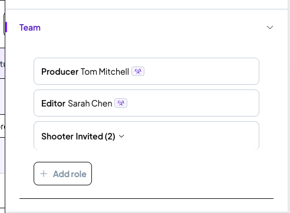
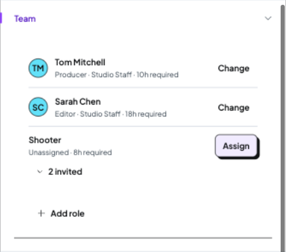
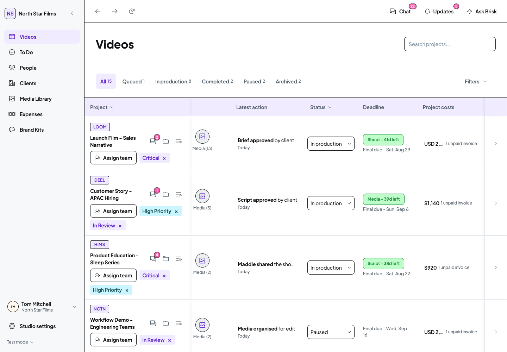
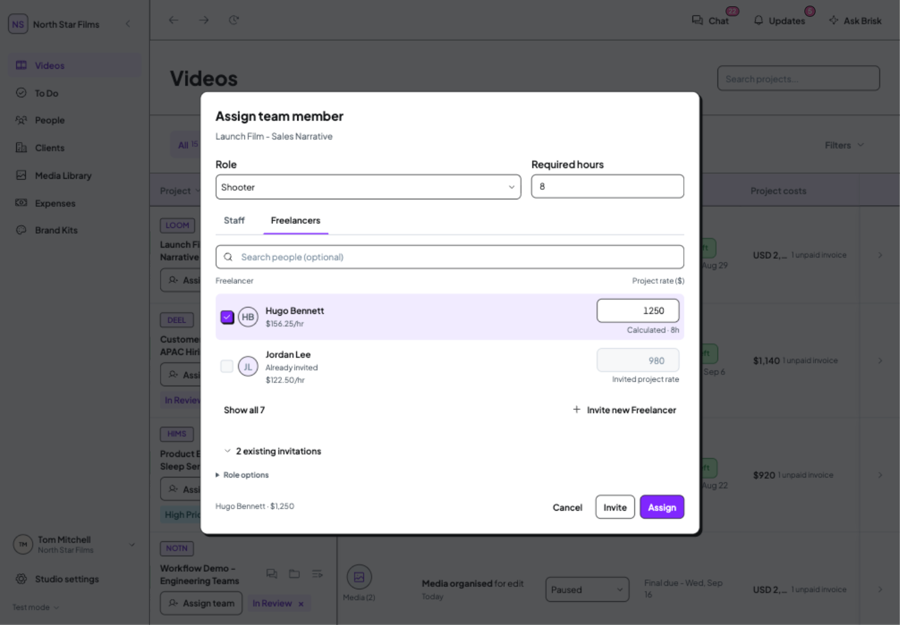
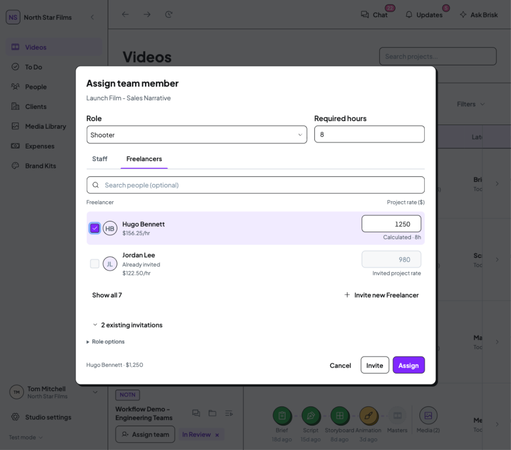

Team assignment
The approved design is now in the application. The Team drawer uses a clear people list, and a visible Assign team action opens the chooser directly from Videos. Required hours, capacity and Freelancer pricing stay in the assignment workflow.
Open the updated app in the isolated demo
28 October 2026 · Current application screenshots, not mockups. Your existing working tabs were left untouched. Refresh an existing app tab when ready to load the updated code there.
Follow-up: accidental modal dismissal fixed
Clicks on the assignment title, labels and other internal content no longer close the window. Number-field arrow keys now change the value without navigating the background project. Cancel, Escape and ordinary drawer dismissal remain available.
This exposed an interaction missed in the initial review. Both reported paths were reproduced before the fix and checked again at 1440px and 1133px. Current screenshot · Reproduction, checks and preservation details.
The Team panel
Person identity is primary, role and required hours are secondary, and Change or Assign has a clear target. Names remain separate profile links. The preferred Videos avatar/role/invited/+more summary and its click-through behaviour are retained.


Assignment directly from Videos
Assign team is visible in the project identity area, including when the Team column is hidden. It opens the existing role chooser directly, preferring an unfilled role. There is no intermediate Team-management step.

Three actions when the preselected role, hours and Staff/Freelancers tab are right: open, select, Assign. Choosing another role or tab, editing hours, or confirming the withdrawal of existing invitations adds the necessary interaction.
Hours and cost stay together
The chooser uses the shared DS fields, tabs and named checkboxes. It shows the hourly reference separately from Project rate. Calculated rates respond to required hours; custom rates and the displayed terms of existing invitations stay intact while a new assignment is drafted.


Staff capacity and all-Staff fallback · Collapsed navigation · Separate invitation confirmation · Narrower desktop drawer.
What was checked
| Desktop layout | 1440px and 1133px; expanded and collapsed navigation; current Team drawer and direct chooser. The DS dialog keeps its title and footer visible while long Staff/Freelancer lists scroll. |
|---|---|
| Selection and scope | Named DS checkboxes, an observed 44px enabled selection target, single Staff selection with deselection, multiple Freelancer selection, disabled explanations, suggested/all lists, optional search and no-results recovery. |
| Hours and rates | 8h → 10h changes Hugo's calculated $1,250 to $1,562.50. A custom $1,400 remains $1,400 at 12h. Jordan's $980 and Aisha's $880 invitation displays remain unchanged while editing the new draft. Changing role loads that role's hours: Editor is 18h. |
| Keyboard | Space selection, tab-arrow navigation, nested role-menu Escape without closing the editor, editor Escape, and focus return to the opener. |
| Save boundaries | Cancelled drafts and the cancelled pending-invitation safeguard leave the protected demo-record snapshot byte-for-byte unchanged. Hours now remain a draft until the assignment safeguard is confirmed, or Save hours is explicitly used. |
| Roles | Studio Staff can manage assignments. Studio Freelancer and Client views expose no new assignment controls; the Client view has no financial columns. Role and navigation settings were restored in the isolated demo. |
| Code and runtime | Type check passed. Videos returned HTTP 200. A fresh app tab and the final Team interactions logged no warnings or errors. Existing Media and To Do implementations, mock data, assets, dependencies, DS source and permission identifiers are unchanged. |
Verification limits and source review
No final Assign, Send, Withdraw, Remove, Unassign or Save hours action was used to change records merely for inspection. The existing assignment, invitation, offer, notification and role-hour update functions were source reviewed. Their final stored effects still need an expressly authorised disposable-record exercise if desired. No screen-reader session, formal accessibility certification, mobile pass, tests, production build, dependency installation, commit or push.
Both live Team consumers in Videos were checked: the project-details drawer and the new direct chooser. The exported ProjectDetailsSidebar has no live consumer in the current repository; it was not claimed as a separately verified project-page implementation.
One initial SVG/boot inspection logged an animation-related promise error. It did not recur on reload; the fresh app tab and final Team interactions were clean. Its origin was not established, and no unrelated code was changed.
Checks, scope and source hashes · Capture register · Tom's approval and timing decisions.
Turnaround timers remain separate
The existing “1d ago” stage label is a seeded age, not an automated 72-hour turnaround promise. The current deadline UI counts towards manually set dates, using a fixed demo reference. There is no Studio timer-or-date setting yet.
Tom confirmed working days, excluding weekends, with the stage clock starting when it becomes Waiting on Studio. A Studio production default for turnaround timers or fixed dates, with project exceptions and a separate final-delivery date, is the recommended next design discussion. No timing behaviour was changed in this Team batch.
The Editor guidance and Client timing article were read through Notion. Tom's new explicit decisions take precedence over their older start-event descriptions.